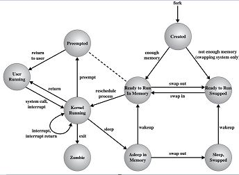

Q. Explain process state transition in UNIX OS.

The lifetime of a process can be divided into a set of states. The following list describe the complete set of process states.
- The process is executing in user mode.
- The process is executing is kernel mode.
- The process is not executing but is ready to run as soon as the kernel schedules it.
- The process is sleeping and resides in main memory.
- The process is ready to run, but the swapper must swap the process into main memory before the kernel can schedule it to execute.
- The process is sleeping and the swapper has swapped the process to secondary storage to make room for other processes in main memory.
- The process is returning from the kernel to user mode,
but the kernel preempts it and does a context switch to schedule another process.
The distinction between this state and state 3 will be brought out shortly.
- The process is newly created and is in a transition state the process exists,
but it is not ready to run nor is it sleeping. This state is the start state for all processes except process 0.
- The process executed the exit system call and is in the zombie state.
The process no longer exists, but it leaves a record containing an exit code and some timing statistics for its parent process to collect.
The zombie state is the final state of a process.